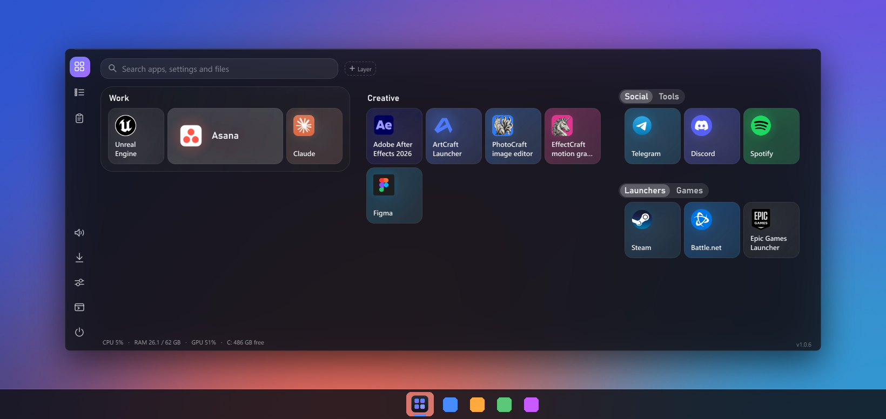
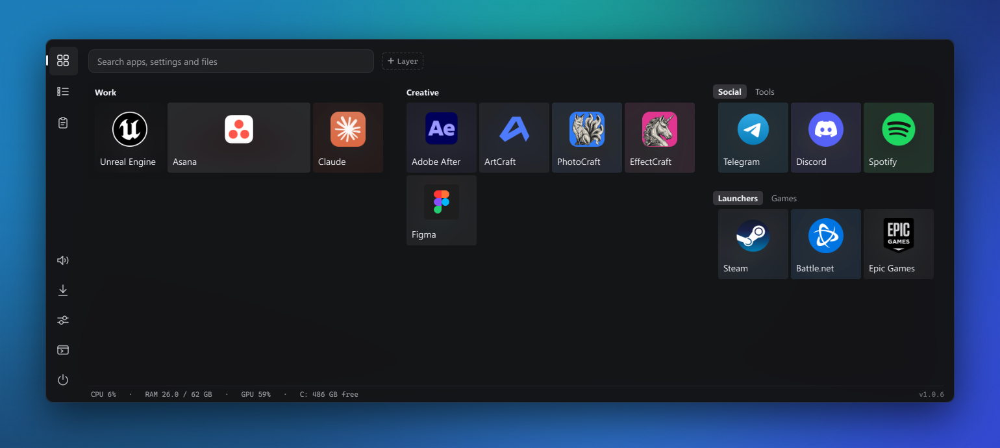
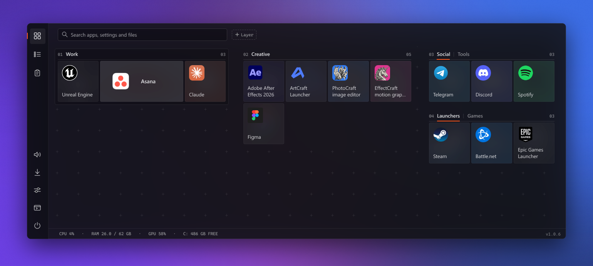
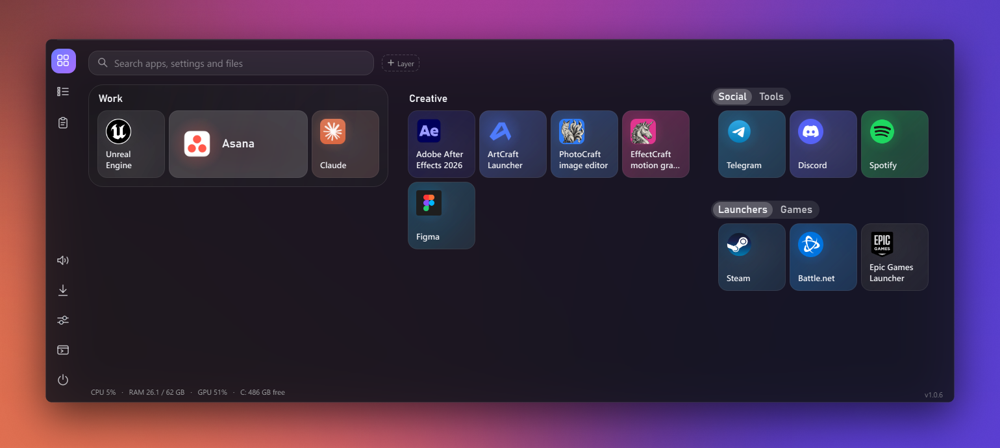
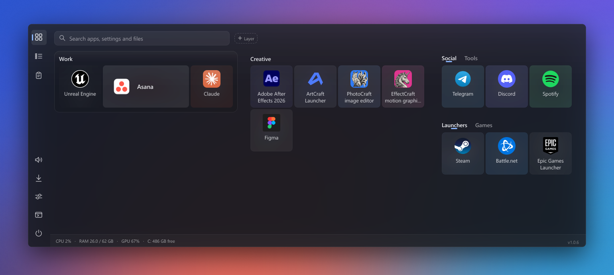

Groups, folders and four tile sizes in a Start menu you arrange yourself. A standalone app that doesn’t patch Windows, needs no admin rights and uninstalls in one click.

A Start menu you arrange yourself — fast, light and respectful of your PC.
Opens in ~0.1 s, or ~0.02 s with “Keep the menu ready”.
~6 MB in the tray. The menu runs only while it’s open.
Groups, folders, 4 tile sizes, custom pictures — only prettier.
No patches to Explorer or system files, no admin rights, clean one-click uninstall.
Glass, blur, colors, corners, labels, cell size, animation — make it yours.

ClassicCalm and familiar
StudioGraphite, grid and a single accent
BentoCard islands with a soft glow of icon colors
FluentGlass and soft shapes in the spirit of Windows 11Press Win and just start typing.
No administrator rights. Installs for your user only and removes cleanly.
Get StartMenu-x.y.z.exe (~11 MB) from Releases.
SmartScreen may warn about an unsigned app: More info → Run anyway.
The wizard shows live previews. Then press Win — done.
Press Ctrl+Esc. All Win+… shortcuts keep working.
Settings → Apps → Installed apps → StartMenu → Uninstall. The Windows Start menu comes back immediately.
About 6 MB in the tray. With “Keep the menu ready” — ~12–25 MB, and it opens instantly.
It needs no admin rights and doesn’t touch system files. The code is open — you can build it yourself.